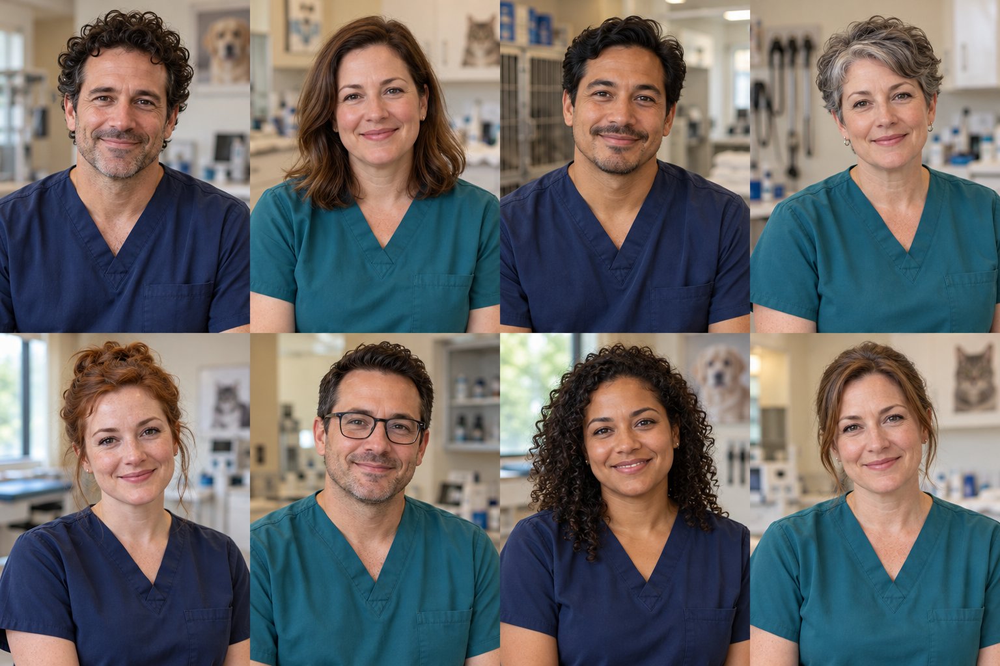
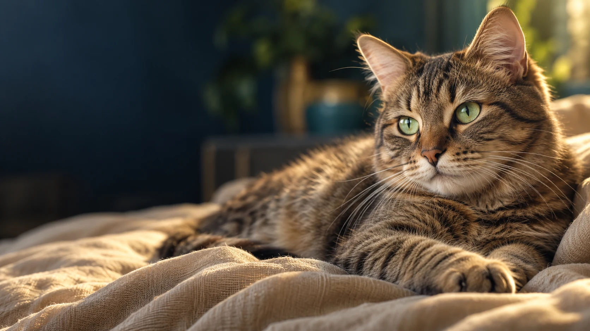

Endocrinología
Dra. Camila Duarte
Acompaña la evaluación de alteraciones hormonales y metabólicas.

Atención de alteraciones hormonales y metabólicas.
Consultar por WhatsAppEl seguimiento se organiza de acuerdo con la evaluación y los antecedentes de cada paciente. Consultá para coordinar una visita.
Contanos el motivo de consulta y si tenés una indicación o estudios anteriores.

Acompaña la evaluación de alteraciones hormonales y metabólicas.